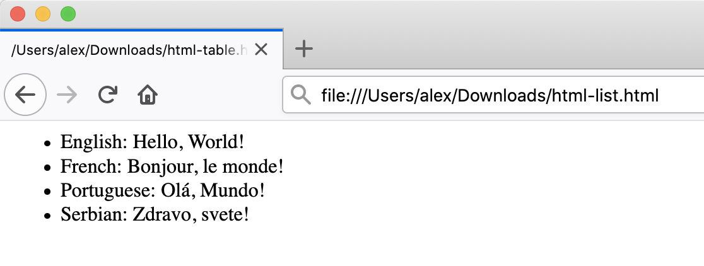

Content from Introduction
Last updated on 2025-03-18 | Edit this page
Estimated time: 0 minutes
Overview
Questions
- What is static web content?
- Why should I use GitHub or GitLab Pages to create my website?
Objectives
- Explain what a static site generator does.
- Choose the appropriate tool for your website/project.
How Websites Work
When we use a web browser to visit a page on the World-Wide Web, the browser asks for information from a server - a computer storing the data relevant to the site and configured to receive and respond to requests for that data. Assuming there were no problems at this stage (e.g. asking for a page which doesn’t exist, or being unable to reach the server), our browser receives and interprets this information to render and display the webpage on our screen.
A web developer would probably be horrified to read such a gross oversimplification, which is just one reason why web developers are not the target audience of this tutorial.
The page displayed by the web browser is the result of combining HTML - a hierarchical format describing the structural elements of the page and their raw content - with CSS - an ordered set of styling instructions telling the browser how the content should be organised and formatted - and any images that should be embedded in the page. Other information received from the server, but not displayed by the browser, includes metadata, cookies, and other non-visible elements in the HTML - information about the site that could be relevant for a computer but probably isn’t interesting to a human (there are exceptions to this) - and scripts that the browser may run to do something in response to various triggers.
Hello World in HTML
When learning a new programming language, you may often find a
reference to the popular Hello world example. These
examples typically capture the simplest code that can produce and
display the text “Hello, World!” on screen.
As HTML requires certain tags to be present and almost always in
matching pairs (open <tag> and closing
</tag>), HTML documents tend to get verbose rather
quickly.
The simplest, valid HTML Hello world is:
HTML
<!DOCTYPE html>
<html>
<head>
<title>Page title</title>
</head>
<body>
<p>Hello, World!</p>
</body>
</html>So as you can imagine, writing long HTML documents by hand is rather painful. Notice that we didn’t specify anything about how and where the text should be displayed.
To achieve this we would additionally need to include stylized tags or Cascading Style Sheets (CSS) instructions. If you do not provide CSS instructions (either inside your HTML document or as a separate file), a web browser will make a best guess regarding the layout of HTML elements on the page based on its defaults.
Exercise: Writing Basic HTML
Given the stylized text:
Hello, World!
write the HTML that will produce the same result. Hint the big font is achieved by use of a heading.
Let’s write a more complex HTML example using a table showing the
“Hello, World!” text in different languages that renders like: 
The HTML to produce such a table looks like this (you can copy+paste the snippet into the HTML file you created in the previous example):
HTML
<table>
<tr><th>Language</th><th>Text</th></tr>
<tr><td>English</td><td>Hello, World!</td></tr>
<tr><td>French</td><td>Bonjour, le monde!</td></tr>
<tr><td>Portuguese</td><td>Olá, Mundo!</td></tr>
<tr><td>Serbian</td><td>Zdravo, svete!</td></tr>
</table>Each row is enclosed between table
row <tr> and
</tr> tags. Within a row, <th> and
</th> tags are used to contain table
headings (special table cells displayed in bold font),
while regular table data cells are
contained within <td> and </td>
tags.
A similar example written using HTML lists would look as follows: 
HTML
<ul>
<li>English: Hello, World!</li>
<li>French: Bonjour, le monde!</li>
<li>Portuguese: Olá, Mundo!</li>
<li>Serbian: Zdravo, svete!</li>
</ul>Here, we used unordered list tags
<ul> and </ul> to define a list
with 4 items, each in turn wrapped in individual list
item (<li> and
</li>) tags.
Static vs Dynamic Sites
Static pages are those whose contents are stored on a server in a state ready to be sent to any user who makes a request for that web page. When a request is made, the server only needs to send the information comprising that web page (such as HTML and CSS). Sites that do not change often, such as a website containing one’s CV, are often stored as static sites.
Conversely, dynamic sites are those that have their pages generated when a user makes a request for a web page. Depending on when the request is made, the content might change; for example, clicking refresh when viewing a discussion in a web forum might result in new comments showing up. The key difference is that static pages need only be generated once, after which they rest unchanged on the server, compared to dynamic pages which are regenerated by a server every time it receives a request.
Examples in the Life Sciences field
A typical example of static website in the Life Science field would be the documentation of a tool or a file format, such as this page at wwpdb.org.
Entry pages of the PDB database, instead, differently load content on the basis of the visualisation tools and options chosen by the user. A database or a webserver is usually a dynamic website.
This lesson focuses on static sites and tools that can be used to create them, known as Static Site Generators.
One of the advantages of using static site generators is that they remove the need for us to manually produce a lot of HTML, allowing us to focus on the human-readable content we want our pages to contain. However, we still need a way to tell the generator how we want our content to look when it’s displayed in the browser. For that, we will use a tool called Markdown, which we’ll learn about in a following episode.

Figure 1.1: Page Generation Alternatives. This figure is a modified version of the original published in JavaScript for Data Science, and is reproduced here with permission from the author.
Static-generated sites are a great choice when the information you want to display on a website is the same regardless of who visits your site and when, and if the content of your pages is unlikely to need to change very often. This makes Static Site Generators a good choice for sites that provide documentation or lesson content like this page: the aim of the page is to deliver the same information to every visitor. The visitor can arrive, (hopefully) find and read what they need, and leave feeling happy and fulfilled.
Dynamic sites provide a lot more possibilities for providing interactivity and personalised or topical content. But creating them is a degree more complicated and also places considerable additional burden on the server, not least in terms of computational requirements and security considerations. Among other things this means that, unlike with static pages (see the rest of this lesson), you’re unlikely to find cost-free platforms to help you deliver dynamic content.
Exercise: The Perfect Tool for the Job
Given the following types of websites, reason if a static site generator is an appropriate solution to implement them.
- A personal website with About and Projects sections
- A forum or discussion platform
- A community blog or news website
- A search engine (such as google.com)
- A wiki (such as wikipedia.com)
- An online book
- personal website: In most cases, Yes. This kind of content is typically written/edited by one person and meant to have a read-only access to visitors.
- forum or discussion: Most likely No. Such website requires interactivity and ways to identify who wrote what content.
For questions 3 and 5 the answer is both Yes and No depending on the requirements and necessary functionality.
- blog/news: A simple blog or news website, maintained by a small set of users, is perfectly achievable by using a static generator. For very large groups of content creators or if access to articles needs to be controlled individually, using a static generator will lead to difficult technical challenges.
- search engine: Most often No. Implementing something as sophisticated as Google’s search would be close to impossible with a static generator. There are ways to have a simple engine that searches across all pages produced by a static generator using indexing and making clever use of browser features but this approach has many limitations.
- wiki: A simple wiki is perfectly doable with a static generator (e.g. GitHub Wiki Pages), however it becomes limiting as soon as its content needs to be edited or discussed by many users, as is the case of Wikipedia.
- online book: Definitely Yes. Static generators are perfect for this type of website. They typically provide ways to avoid repeating content (variables and templates), automatic creation of a Table Of Contents, among other goodies.
GitLab Pages
If the site you want to create is a good match to the strengths of a static site generator - it’s relatively small, will be updated infrequently, and the content does not need to be personalised to the visitor - then creating it with GitLab Pages is a good option. GitLab Pages is a system allowing users to create and serve websites directly from their GitLab repositories. The service is free for public repositories and simple pages can be created and served with very little configuration required.
We will go through a list of templates, of increasing complexity. While the first will be based on plain Markdown, the more advanced ones will be based on multiple technologies (an example is shown in the diagram below). It may sound overwhelming at first but we will explain most of these technologies in this lesson - we only don’t cover CSS/Sass (styling language that gets compiled into CSS) and JavaScript/CoffeeScript (scripting language that gets compiled into JavaScript) in detail.

First, we are going to set up a project to store our files and learn more about how to author and format the content of our pages using HTML and Markdown, before configuring GitLab to display this content as a website using GitLab Pages.
Setting Up a Project
Before we get into working we must first create a project to work in.
This project is similar to a folder on your computer, the main
differences being that the folder lives on the web in GitLab/GitHub
(though you can also keep a copy on your computer if needed) and that
folder is using a version control software called git to track changes to the
files. For our purposes we will mostly be ignoring the version control
software, though it can be handy if you need to revert to old versions
(see Software
Carpentry - Version Control with Git for an introduction). In this
lesson we will be working with this folder on the web to control the
website we will be creating.
Login into your GitLab account
Before you can create a repo, you will need to login in the EMBL GitLab
There are two ways of creating a new project:
Click the “+” button in the navbar on top and choose “new project”

or, if you are on the projects page, click the “New project” button

You will be redirected to a page that provides three options:
- Create blank project
- Create from template
- Import project Take your time to read the descriptions of the different cases. Please select “Create blank project”.
Next you will need to fill in some info about your project.

In this lesson, we will be working on a general group website. You
can imagine this website may be for your lab group, a specific project
group, or another group you work with. Under the “Project name” field,
type group-website.
The Project slug will determine the URL to access your
project and website, it is automatically generated when you fill the
Project name field. Leave it as is.
Have a look at the dropdown menu next in the Project URL
field. The default option is your own user, this refers to your own
namespace. Other namespaces might be available, depending on which
groups you belong to. For example, if this is planned to be your group
website, it may be a good choice to select your group namespace to host
it. This both to provide easy access to the project to other group
members and to have your group name (and not your user name) in the
website URL. However, we will initialise this test projects in our own
namespace.
We can also add a description (for instance “Project for learning how to make websites with GitLab pages”) so we know what this project is when we find it again after the workshop.
We will also check the
Initialize repository with a README option. It is good
practice to have a README file that gives more information about your
repo.
GitLab vs GitHub
Most of the steps here described are very similar in GitHub. What GitLab calls “Project”, in GitHub is a “Repository”, so if your instructor confuses the two terms here is why. In addition, the “Groups” are in GitLab “organisations”.
More relevant are the differences regarding the visibility level and setup options. In GitHub, only two options are available for a repository: “Public” or “Private”. The EMBL GitLab allows a more specific fine tuning of the permissions through the option “Internal”, i.e. accessible only by logged in user. Finally, while GitLab only allows to initialize the repository with a README, GitHub includes the option to initialise it with a .gitignore and license files too.
Once you’ve finished these steps you can click the
Create Project button. GitLab will then setup the repo and
it should create the repo called group-website with a
README.md file in it. What the graphical interface just
helped us doing, is basically the following steps:
BASH
mkdir group-website
cd group-website
git init
cat > README.md
git add README.md
git commit -m "Initial commit"On a remote server. The default branch is main.

Before moving on to the next chapter, have a look at the buttons on
top, such as Add LICENSE, Add CHANGELOG etc.,
suggesting you possible next steps. To name one, the License is
definitely something you might want to include in your project. We will
not be looking into this in detail, but please consider that licensing
is a good practice (if not a necessary one) for any project that
includes data or software. Your website, even if a very simple and
static one, will include some sort of data, even just people
names. The technologies and templates you will use to generate it are
software. A word to the wise.
Key Points
- A static site generator combines page-specific content with layout elements and styling information to construct individual webpages.
- GitHub/GitLab Pages is a good choice for people who are already familiar with Git and GitHub/GitLab.
- This approach can be used to create a relatively small website/blog on a limited budget.
Content from Authoring With Markdown
Last updated on 2025-03-18 | Edit this page
Estimated time: 0 minutes
Overview
Questions
- How can I write content for my webpages?
- How do I link to other pages?
Objectives
- create simple pages of formatted text
Markdown
Markdown is a lightweight markup language, i.e. a convention for adding style information to textual content. As the name Markdown indicates, the syntax elements of this language are shut down to a minimum. Having a rather minimalistic syntax, text formatted in Markdown is comparably readable. This might be one reason for Markdown having become the language of choice for formatted user input on websites like, for example:
Where to Start Writing Markdown?
A lot of tools for rendering Markdown source code exist. Rendering is
the process of generating a nice view of the content using the style
information included in the source text. Chances are high, your editor
can do this. As we are working towards authoring websites using GitLab
pages, we will use GitLab straight away for learning the basics of
Markdown. The GitLab project you created in the last episode contains a
file README.md. Click on the file name to access it.
The image below shows the default view. This view includes a rendered
view of the content inside the file README.md, like the one
in our project homepage.

The buttons on the right allow you to interact with the file and
visualisation. The first couple of buttons, the ones with the icons,
allow you to switch between Display source and
Display rendered file. Over with the mouse on them to
display these two messages in tooltips. The source is the non rendered
view of our file. We can edit it through the blue Edit
button. Click it.

We can change the content and have a look at the rendered view by
clicking the Preview tab on top.

Let’s add Some **bold** font and see what happens when
we preview it using the preview tab. What happened to the world
bold?
To save the content to the file README.md, we should
click the Commit changes button at the bottom of the page.
Please notice: this is not a simple “Save” button, but an actual commit.
This version of the project will be stored in git with the
Commit message that you will specify in the commit menu
here and in the branch you settle as Target branch. We only
have the main branch for the moment - so that choice is obvious - and
the commit message is precompiled with the name of the file you just
edited. You may want to be more specific in your commit message, but for
the moment let’s go with the default option provided. Commit this
change.
Writing a Commit Message
A commit message is a short, descriptive, and specific comment that will help us remember later on what we did and why. You find more about writing commit message in this section of the Git-novice lesson.

The interface redirects you to the main project page. On the top, a message says “Your changes have been successfully committed.” Our changes were included in the README file, that now shows the second line with the bold font.
Writing Markdown
Now that we know about the editing interface and preview tab of our
projects README.md we can use it as a text editor and
investigate selected Markdown features.
Our README.md already contains text and two formatting
features:
- Heading
# group-website - Emphasis using
**bold**.
Let’s learn some more Markdown by adding some formatting and see what
happens when we preview it using the preview tab. Add the following to
your README.md file.
MARKDOWN
# group-website
Repo for learning how to make websites with GitLab pages
## Learning Markdown
Vanilla text may contain *italics* and **bold words**.
This paragraph is separated from the previous one by a blank line.
Line breaks
are caused by two trailing spaces at the end of a line.
[Carpentries Webpage](https://carpentries.org/)
### Carpentries Lesson Programs:
- Software Carpentry
- Data Carpentry
- Library CarpentryYou can then click the preview tab again to see how the formatting renders.

Markdown Trailing Spaces Are Meaningful
In the example above there are two spaces at the end of
Line breaks. These introduce what is called a hard
line break, causing that paragraph to continue in the next line
by adding a <br/> to the generated HTML.
If you break the line in a markdown file but don’t include the two
trailing spaces the generated HTML will continue in the same line
without introducing a <br/>. This is
called a soft line break.
In some cases you may find that soft line breaks do
introduce a <br/>. This can happen when using
different markdown flavors. {:
.language-markdown }
You can commit these changes to save them. But first, let’s do an exercise to try out writing more markdown.
Exercise: Try Out Markdown
Use this
cheatsheet to add the following to your README.md:
- Another second level heading
- Some text under that second level heading that includes an link and
strikethroughtext. - A third level heading
- A numbered list
- Bonus: Add this image https://github.com/carpentries/carpentries.org/blob/main/images/TheCarpentries-opengraph.png
{kind=link}
For example your markdown might look like the following:
MARKDOWN
## More info on the lesson
You can find this lesson [here](https://grp-bio-it-workshops.embl-community.io/building-websites-with-gitlab/).
### Four reasons you should learn Markdown:
1. Less formatting than HTML
2. Easy to read even with formatting
3. Commonly used for websites and software development
4. We ~~don't~~ use it in The Carpentries
Reference-Style Links
Up to now, we have used inline-style links which have the URL inline with the description text, for example:
If you use a link more than once, consider using so called
reference-style links instead. Reference-style links reference
the URL via a label. The label goes into square brackets
[ ] right after the description text of the link and then
later, usually at the bottom of the page, you can connect that label to
the url it references to complete the link. This looks like:
We will continue to use Markdown and learn more throughout the rest of the lesson. Whether you decide to structure your website through Markdown-based technologies or HTML, you will still need to know some basics of Markdown to edit your README file. The README file will provide an essential guide - shown in the landing page of your project - for your collaborators and also for you to understand what the project is about and how to contribute.
Markdown Flavours
The initial description of Markdown was informal and contained certain ambiguities so over the years different Markdown implementations and syntax variations (often referred to as “flavours”) appeared to support various syntax features and extensions. As a consequence, the syntax from one variant may not be interpreted as expected in another - you have to be aware which one is being used by a particular platform. Here are a few well-known variants:
- GitLab-flavored Markdown (used on this lesson and by GitLab)
- GitHub-flavored Markdown (used by GitHub)
- Kramdown (a fast, Ruby, open source implementation released under the MIT licence)
Mardown is also the language of the collaborative notes platform available at EMBL. You can acces it here. The platform is based on CodiMD.
Exercise: Add Your Repository Details to CodiMD
Use Markdown syntax to add a link in the collaborative notes document you are using to follow along with this lesson. The link text should be your GitLab username, and the target your repository.
Key Points
- Markdown is an relatively easy way to write formatted text
- Markdown and HTML tags can be used together in a single page
- I recommend writing Markdown links ‘reference-style’
- The landing page for a website is conventionally named
index.md
Content from Hosting Pages on GitLab
Last updated on 2025-03-18 | Edit this page
Estimated time: 0 minutes
Overview
Questions
- How do I publish my pages via GitLab?
Objectives
- publish HTML on the web with GitLab Pages
GitLab pages
Static websites only
As anticipated by the previous chapters, to publish a website with
GitLab Pages you can use several different technologies like Jekyll,
Gatsby, Hugo, Middleman, Harp, Hexo, and Brunch, just to name a few. You
can also publish any static website written directly in plain
HTML, CSS, and JavaScript. Pages does not support dynamic
server-side processing, for instance, as .php and
.asp requires.
The key to having your website up and running as expected is the
GitLab CI configuration file, called .gitlab-ci.yml. This
file configures how your website will be built. It is written in
YAML, which has its own syntax that we will not explain into
details, so we recommend you follow this quick start guide before
setting it up. To work correctly, it needs to be placed at your root
directory, i.e. at the same level of our README file, in the main
project folder.
The most important fact is that with GitLab CI, you take control over
your builds. They won’t be in an invisible black box where you don’t
know what is going on! You will be able to see any build running live by
navigating to your project’s Pipelines (we will do this
later). You can also add any command to your .gitlab-ci.yml
script. This allows you to do in the remote server pretty much anything
you do on your local machine. We will how some examples on how to run
custom build commands through the .gitlab-ci.yml. file
later on in this lesson.
Work locally or in GitLab
This lesson isn’t aiming to teach Git and how to work locally (in your laptop) on a project versioned and managed in Git. If you have a basic understanding of Git, however, you can do the next steps locally to learn how to properly develop a website: testing it locally and only committing and pushing significant versions of it. On the contrary, working on the online platform will force us to commit versions that will not be very meaningful, for the sake of learning.
If you have a basic understanding of Git, configuring a local project
for deployment. Clone your repository locally (check the git novice lesson
if you need to review what the git clone command does and
how to git push changes from local to remote projects). In
short, you should now run, from a terminal:
And keep working in your cloned directory. You can add and edit your
files via vim or from any editor that you like - it doesn’t
have to be launched from the terminal, but remember to keep the terminal
open for when you will have to push the changes back to the remote.
We will start with the simplest example, a plain HTML site with GitLab pages.
Let’s create the .gitlab-ci.yml file directly in our
GitLab project online. We will need to work on multiple files. To do so,
we want to open the Web IDE by clicking the button on the top right of
our project: Edit > Web IDE.

If this is the first time that you open it, a customisation panel
will appear. Ignore it for now, but know that the look-and-feel
of the next screenshots might differ from what you see based on the
default template. You should however have the same menus and files
available for use. In particular, the EXPLORER (a file
explorer) on the right side lists files and folders in your repository
(at the moment, there should only be the README file), and
the panel on the right shows the content of such files when you open
them.
Over the mouse on the name of your project in the
EXPLORER to see a small menu including an icon to add files
to the folder. Click on that and create a .gitlab-ci.yml
file. Then, fill it with the following content:
Create your .gitlab-ci.yml file and write in it:
What this code is doing is creating a job called “pages” telling
GitLab to deploy the website content in
public, whenever a commit is pushed and
only to the main branch. It doesn’t have much to do but
looking at the content in public, hence the “script” configuration is
basically none (it just echoes “Nothing to do” to the terminal).
Validating the gitlab-ci.yml file
Before you push any .gitlab-ci.yml to your project, you
can validate its syntax with the tool called CI Lint. You need to
be logged into your account to have access to this tool. It’s found by
navigating to your project’s Pipelines: there is a button at the
top-right of your screen. You can read through the full
documentation for .gitlab-ci.yml for more information.
Git branches and GitLab CI files
You can have a distinct .gitlab-ci.yml for each project
- but you could even have distinct GitLab CI configurations for each
branch. This means you could test your script in parallel branches
before pushing to your main branch. If the build succeeds, you merge. If
it doesn’t, you can make adjustments and try building again without
messing up your main branch.
Next, we will create the public folder (use the new
folder icon in the EXPLORER menu), containing an
index.html file.
Populate the new file index.html with this content:
Before we go on with the chapter, try to imagine what will be the final display in the resulting webpage. You can draw it in a piece of paper.
If you created the .gitlab-ci.yml file, and the
public folder containing the index.html file,
you should see all of them in the EXPLORER. Now, let’s save
the first version of our project (commit), by selecting the
Source control menu on the left side.

This will change the panel on the left, which will list the files
that we changed (two files added) and expect you to input a commit
message (a short description of the project version that you are
committing) in the textbox above. Our commit message in this case could
be: “Deploy simple HTML through GitLab pipeline”. Input this or another
message, and then Commit to 'main'.
Go back to your remote project in GitLab. The screenshot below shows how it should look like:

The public folder contains the index.html
file. The push command you just launched should have triggered your
first pipeline. On the menu on the left, choose
Build > Pipelines to visualise it.

Since we stopped and checked what our remote folder looked like, your
pipeline may already be  . If not, just wait
until it becomes so.
. If not, just wait
until it becomes so.
Your first website was deployed successfully! Wonder where you can
see it? Go to Deploy > Pages. The URL of your website is
reported there. It should be:
https://<your user name>.embl-community.io/group-website.

The screenshot below also contains an interesting alert. Always read this type of messages prompted by the GitLab interface, these are usually relevant to you. It says “Access Control is enabled for this Pages website; only authorized users will be able to access it. To make your website publicly available, navigate to your project’s Settings > General > Visibility and select Everyone in pages section.” It also links to further documentation if you want to know more. Follow the instructions if you would like to make your website public.
Wheter it’s public or not, we should be able to visualise our own website. Click on the link, and here it is:

Exercise: Compare with your sketch
Does the website you just deployed look as you thought it would, given the html code in the index file? Did you think that something else would be shown? Discuss with the colleague next to you.
Exercise: The plain-html template
GitLab provides a series of templates of web pages deployed through
Pages. One of them is called “plain-html”, you can access it at this link. The general
structure is quite similar to the one we just used. Go to the
public folder. There are two files here, one
style.css file and one index.html file.
We will now go into the detail of .css file functioning
in this lesson, but it might be interesting now to have a look at its
syntax and content. This type of file is used to style HTML content.
This specific file provides styling instructions for three elements: the
body, the navbar and the link text
(a) within the navbar, that changes color when the mouse is
over it (a:hover). Don’t worry now about understanding how
this works exactly, but when you will visualise this page, remember to
go with the mouse over the navbar links to see this in action.
Now open the index.html file. Its content is reported
below.
HTML
<!DOCTYPE html>
<html>
<head>
<meta charset="utf-8">
<meta name="generator" content="GitLab Pages">
<title>Plain HTML site using GitLab Pages</title>
<link rel="stylesheet" href="style.css">
</head>
<body>
<div class="navbar">
<a href="https://pages.gitlab.io/plain-html/">Plain HTML Example</a>
<a href="https://gitlab.com/pages/plain-html/">Repository</a>
<a href="https://gitlab.com/pages/">Other Examples</a>
</div>
<h1>Hello World!</h1>
<p>
This is a simple plain-HTML website on GitLab Pages, without any fancy static site generator.
</p>
</body>
</html>Time to sketch again! Draw the resulting webpage, provided this HTML file content. Hint: the navbar is a bar on the top of the page, that allows us to navigate the website content.
Optional question: how is the .css file used? How does
the website know which is the right file to read?
You can go to the deployed website to check how does it look like. Here below a screenshot of the result:

Is there any difference with your sketch?
Optional question: the .css file location is specified
in the .html file, through:
<link rel="stylesheet" href="style.css">.
Useful links
You have the minimal tools now to be able to play around with HTML and css. You can copy the two files from the last exercise template into your repository and try to edit the text size, the navbar color, add links or text formatting. If you decide to fork this repository to experiment, please do as the authors ask in their README file (one more reason to consult the README files in each other projects and to compile them carefully): “If you forked this project for your own use, please go to your project’s Settings and remove the forking relationship, which won’t be necessary unless you want to contribute back to the upstream project.”
An extensive tutorial about HTML elements, including examples of forms, media and links embedding, can be found at w3schools. In addition to this one, many other resources provide HTML tutorials, you can definitely choose one that fits your tastes to learn more.
Key Points
- GitLab serves pages in your project according to a configuration
file called
.gitlab-ci.yml
Content from GitLab Pages with Jekyll
Last updated on 2025-03-18 | Edit this page
Estimated time: 0 minutes
Jekyll is a powerful static site generator that may be behind GitLab Pages. It creates static HTML website content out of various files in your repository (Markdown files, CSS style sheets, page templates/layouts, etc.). This ‘compiled’ content is then served as your website.
Jekyll makes managing your website easier because it depends on templates. Templates (or layouts in Jekyll notation) are blueprints that can be reused by multiple pages. For example, we (your instructors) did not style each single exercise in this lesson separately: we created a template that specify how exercises should be shown (the orange box, the dropdown solution box etc.) and every time we tag a block of text as “Exercise” it is shown this way.
We will cover Jekyll layouts in a bit; for now let’s start learning Jekyll and its scripting language called Liquid.
Global Parameters
Also in this case, we will trigger and customise our deployment from
the .gitlab-ci.yml file. You can decide to edit your
previous version of the group-website repository, but we
suggest to create a new one. Follow the steps in “Setting up a project”
in the introduction
if you want to do so. Create/change the .gitlab-ci.yml file
content with:
image: ruby:latest
pages:
script:
- gem install bundler
- bundle install
- bundle exec jekyll build -d public
artifacts:
paths:
- public
only:
- main{: .language-yaml }
This code requires the script to run on the environment of the latest Ruby version, installs the Jekyll gem, and builds the site to the public path (creating the folder remotely, you should not worry about it at this point). The result affects only the main branch.
The execution of this pipeline also requires a Gemfile.
Create it in the root folder with the following content: ~~~ source “https://rubygems.org”
gem “jekyll” ~~~ {: .language-shell }
In brief, but we will look into it in more detail, Jekyll looks for text files that begin with a header formatted like this:
---
variable: value
other_variable: other_value
---
...stuff in the page...{: .source}
and inserts the values of those variables into the page when formatting it. The three dashes that start the header must be the first three characters in the file: even a single space before them will make Jekyll ignore the file.
The header’s content must be formatted as YAML, and may contain
Booleans, numbers, character strings, lists, and dictionaries of
name/value pairs. Values from the header are referred to in the page as
page.variable. For example, this page:
---
name: Science
---
{% raw %}Today we are going to study {{page.name}}.{% endraw %}{: .source}
is translated into:
<html>
<body>
<p>Today we are going to study Science.</p>
</body>
</html>{: .html}
Exercise: Jekyll’s syntax
Test your understanding of Jekyll’s syntax. What would this template will be translated into? ~~~ — name: Tom location: Heidelberg — {% raw %}{{page.name}} is in {{page.location}}. I believe {{page.location}} is a very nice city.{% endraw %} ~~~ {: .source}
Solution
<html> <body> <p>Tom is in Heidelberg. I believe Heidelberg us a very nice city.</p> </body> </html>{: .html}
{: .solution } {: .challenge }
Jekyll’s main configuration options are specified however in another
file, called _config.yml. Let’s create some configuration
parameters for our website.
- Create a
_config.ymlfile in your site’s root directory. - Add parameters
descriptionandemailto it as:
description: This project develops training materials for reseachers wanting to learn to build project
websites in GitLab Pages.
email: team@carpentries.org{: .language-yaml}
Global configuration settings from _config.yml are made
available as site.PARAMETER_NAME variable in every page
within the website. So, global parameter email we defined
above would be accessed as site.email. Please note: this
are global paramenters, hence different from the local page-specific
parameters in the examples above.
In order to access the parameter’s value within a page, you use
Liquid’s notation to output content by surrounding a variable in curly
braces as {% raw %}{{ variable }}{% endraw %}.
Predefined Global Parameters
In addition to the global parameters you define, Jekyll also makes a number of useful predefined site-wide variables available to you within your website: e.g.
{% raw %}{{ site.time }}{% endraw %}(the current time) or{% raw %}{{ site.pages }}{% endraw %}(a list of all pages). {: .callout}
Create a index.md file in the root folder, with the
following content:
{% raw %}---
title: My first Jekyll page
---{% endraw %}
# Building Websites with Jekyll and GitLab
## Description
{% raw %}{{ site.description }}{% endraw %}
Welcome to {% raw %}{{ page.title }}{% endraw %}
Have any questions about what we do? [We'd love to hear from you!]({% raw %}mailto:{{ site.email }}{% endraw %}){: .language-markdown }
Your project should include the following files:
 {:
.image-with-shadow width=“600px” }
{:
.image-with-shadow width=“600px” }
Commit and push your changes, then monitor the pipeline execution and
check the final result at your
https://<your user name>.embl-community.io/group-website
URL.
Exercise: Create a Global Twitter Parameter
In
about.mdwe have a Twitter URL under the ‘Contact us’ section. That’s one piece of information that could go into global parameters in_config.ymlas you may want to repeat it on a footer of every page. Make changes to your website to extract Twitter URL as a global parameter. > ## Solution > 1. Add parameter twitter to_config.yml: > ~~~ > description: “This research project develops training materials for reseachers wanting to learn to build project > websites in GitHub with GitHub Pages.” > email: “team@carpentries.org” > twitter: “https://twitter.com/thecarpentries” > ~~~ > {: .language-yaml} > > 2. Make use of the twitter parameter inabout.md: > > ~~~ > # About > > ## Project > > {% raw %}{{ site.description }}{% endraw %} > > ## Funders > > We gratefully acknowledge funding from the XYZ Founding Council, under grant number ‘abc’. > > ## Cite us > > You can cite the project as: > > > The Carpentries 2019 Annual Report. Zenodo. https://doi.org/10.5281/zenodo.3840372 > > ## Contact us > > - Email: {% raw %}{{ site.email }}{% endraw %} > - Twitter: {% raw %}{{ site.twitter }}{% endraw %} > ~~~ > {: .language-markdown } > > 3. Note that you should not see any changes to your website really. However, you can now access your Twitter URL from > any website page, should you need to. > {: .solution} {: .challenge}
Local Parameters
In addition to global (site-wide) parameters available via the
site global variable, Jekyll makes local
(page-specific) information available to you via the page
variable. Some of these are pre-defined - like page.title,
which gives you the title of the page that is currently active/being
visited. Others you can define yourself. Check this list of
predefined page parameters.
You can define local parameters using YAML notation within a Markdown
page by including it in a page header and delimiting the header with
triple-dashed lines ---. These headers are called front
matter and are used to set variables and metadata on individual
pages in your Jekyll site.
Front matter
From Jekyll’s website:
Any file that contains a YAML front matter block will be processed by Jekyll as a special file. The front matter must be the first thing in the file and must take the form of valid YAML set between triple-dashed lines. {: .callout}
Global and Local Parameters Are Case Sensitive
It is important to note that the parameters used in the sites are case sensitive. By convention, usually they are all lowercase characters. {: .callout}
Here is an example:
---
layout: post
title: "My first blog post"
author: "Danger Mouse"
---{: .language-yaml }
Between these triple-dashed lines, you can overwrite predefined
variables (like page.layout or page.title) or
create custom ones you need locally on the page (like
page.author). These variables will then be available for
you to access using Liquid’s tags
(e.g. {% raw %}{{{% endraw %} page.title {% raw %}}}{% endraw %}
) further down in the file and also in any files that include this one.
Note that these variables are only accessible on that page. You will get
an error if you try to reference a page.variable that was
defined on a different page.
Exercise: Practice With Local Variables
Let’s practice making and using local variables. Think of a local variable you may want to use only in your
about.mdorindex.mdpage. If you cannot think of any, create a local variable called ‘lesson-example’ with the value of ‘https://carpentries.github.io/lesson-example/’ and reference it in yourindex.md.What did you add to your
index.mdto create this variable? Where did you add the front matter in yourindex.md? How did you reference that variable?Solution
Create a YAML header at the very top of
index.mdand add thelesson-examplevariable in between the triple-dash delimiters. You can then reference the value within yourindex.mdpage as{% raw %}{{{% endraw %} page.lesson-example {% raw %}}}{% endraw %}. Your file should now look like:--- lesson-example: "https://carpentries.github.io/lesson-example/" --- # Building Websites in GitHub ## Description {% raw %}{{ site.description }}{% endraw %} More details about the project are available from the [About page](about). See some [examples of our work]({% raw %}{{{% endraw %} page.lesson-example {% raw %}}}{% endraw %}). Have any questions about what we do? [We'd love to hear from you!]({% raw %}mailto:{{ site.email }}{% endraw %}){: .language-markdown }
Note that this variable is not accessible from
about.mdpage and is local toindex.md. {: .solution} {: .challenge}
Adding new pages
The next step will be to create another page of this website.
Ideally, our website will have multiple pages and therefore, to keep
things in order, we will create the pages folder to store
them. In this folder, create an about.md file with the
following content:
{% raw %}---
title: About
permalink: /about/
---{% endraw %}
# About
## Project
{% raw %}{{ site.description }}{% endraw %}
## Funders
We gratefully acknowledge funding from the XYZ Founding Council, under grant number 'abc'.
## Cite us
You can cite the project as:
> *The Carpentries 2019 Annual Report. Zenodo. https://doi.org/10.5281/zenodo.3840372*
## Contact us
- Email: [{% raw %}{{ site.email }}{% endraw %}](mailto:{% raw %}{{ site.email }}{% endraw %})
- Twitter: [@thecarpentries](https://twitter.com/thecarpentries){: .language-markdown }
Note that the URL location of this page is specified in the header,
through the permalink attribute.
This is the current aspect of your folders:
 {:
.image-with-shadow width=“600px” }
{:
.image-with-shadow width=“600px” }
Now, we should edit the index.md file to include a link
to this new about page, in order to be able to reach it from the main
page. Add a line the index.md to include:
More details about the project are available from the [About page](about).{: .language-markdown }
The link in this line will redirect to
https://<your user name>.embl-community.io/group-website/about,
that is the URL of our new about page.
Commit, push and go to your website to see the changes. Note that
site parameters will not render nicely when viewing files in GitHub
(they will be displayed as text
{% raw %}{{ site.PARAMETER_NAME }}{% endraw %} rather than
the parameter’s rendered value) but will in the website.
Reuse and Reduce
Jekyll’s global parameters are a useful way to keep all your site-wide configuration in a single place (even if you only use them once). In combination with Jekyll layouts/templates (to be covered in the next episode) they are a great way of creating reusable markup snippets that can be repeated on multiple or even on every page of your website. Reuse helps you reduce the amount of code you have to write. {: .callout}
Useful links
This was just meant to be a very basic tutorial. The possibility of sites customisation with Jekyll go far beyond what shown here, you could for example:
- design page layouts (such as the exercises/solutions in this lesson),
- work with loops to process variables containing multiple values iteratively,
- use filters to control the format of variables when inserted in a page,
and more. This lesson from The Carpentries, even if designed for GitHub, is a valuable resource to learn more about how to do so.
If you are looking for the official GitLab documentation about GitLab Pages with Jekyll, follow this link.
Finally, this project contains a more elaborated template of a GitLab and Jekyll based website.
{% include links.md %}
Content from GitLab Pages with Sphinx
Last updated on 2025-03-18 | Edit this page
Estimated time: 0 minutes
Overview
Questions
- How do I publish web pages through GitLab and Sphinx?
Objectives
- Publish reStructuredText files as HTML on the web with GitHub Pages
Sphinx is a tool to generate webpages or PDF, mainly designed to create a project documentation. It was originally created for the Python documentation, but it has excellent facilities for the documentation of software projects in a range of languages. Polyglot documentation systems might be very useful in case your project increases in complexity or number of collaborators, so take a note about this.
In this chapter of the lesson we will use Python programming language. Even if this is not strictly necessary, we suggest you to familiarise with Python - as explaining it falls outside the purpose of this lesson. You can choose to do so by going through The Carpentries lesson Programming with Python.
Exercise: Documentation
In a group, have each member open one of the following packages’ documentation
Discuss what the common components are, what is helpful about these documentation sites, how they address the general concepts on documentation, how they’re similar and how they’re different.
While Jekyll converts Markdown files (.md) into HTML,
Sphinx converts reStructureText files (.rts). While these
two formats might seem very similar at a first glance, they were created
for two different purposes: Markdown to write for the web,
reStructuredText to write documentation. This
blog post provides more insights about what this means in practice,
the most important point that we would like to highlight in this context
is that reStructuredText is well-suited for the conversion to PDF too.
This makes it a useful tool also for the development of documents you
may need both online and in paper copies, for example training materials
or a meeting agenda.
Sphinx quickstart
In sake of clarity, the next steps of this chapter will only focus on Sphinx files that are relevant for the HTML files generation. However, by installing Sphinx locally you can run the quickstart command to init a basic Sphinx project. We highly recommend this option if you would like to further your understanding of how to document with Sphinx. To this aim, we report here the necessary steps.
Your system probably has Sphinx already installed. Check if so by typing in your terminal:
If it isn’t, you will be able to installing by typing:
Or check more detailed installation instructions here. Once Sphinx is installed, we can run the quickstart command to get an overview of the minimal set of files that are necessary to build the documentation. The following command will create an empty repository and run this command there:
BASH
mkdir sphinx-quickstart-test
cd sphinx-quickstart-test
sphinx-quickstart
...
Separate source and build directories (y/n) [n]:
...
Project name: My project
Author name(s): <Your name>
Project release []:
...
Project language [en]:Several documents will be generated. Here an overview:

The files that are relevant to us in this context are the
index.rst file - that is the equivalent of our
index.md file in the example with Jekyll - and the
conf.py file. This is why the lesson goes through them
only.
Create an empty project folder. Let’s initialise our
index.rst file in our project’s root folder.
MARKDOWN
.. this is a comment, it is not rendered
Sphinx Example Project's documentation
======================================
Contents:
.. toctree::
:maxdepth: 2It reports our project main heading, and then a table of contents through the “TOC tree”. A numeric maxdepth option may be given (we initalised it at 2) to indicate the depth of the tree; by default, all levels are included. More about Toc tree at this link. In short, when adding *.rst files to our table of content, they should be listed here. Let’s add a file to see how this works.
Create a about.rst file, also in the main root folder,
with the content:
Now let’s add this file to the TOC tree by editing the
index.rst file:
MARKDOWN
.. this is a comment, it is not rendered
Sphinx Example Project's documentation
======================================
Contents:
.. toctree::
:maxdepth: 2
about.rstThat’s it: our home page (generate with the index.rst
file) will now link to the About page (about.rst). Next,
let’s write a minimal conf.py file, also in the root
directory.
BASH
# -- Project information -----------------------------------------------------
project = 'My project'
copyright = '2021, <Your name>'
author = '<Your name>'
release = '1.0'
# -- Options for HTML output -------------------------------------------------
html_theme = 'alabaster'For a full list of options that can be specified in this file, check the documentation.
Sphinx quickstart
Once again, having Sphinx locally installed will support you through
the next stages. Indeed, you can build your documentation website
locally through the command sphinx-build . build/ to be run
in your root folder. Once run, it will generate your output website in
the build/ folder. You can visualize it simply by opening
the index.html file through your favourite browser.
Also in this case, the .gitlab-ci.yml file is necessary
to specify instructions for GitLab deployment. Fill it with:
YAML
pages:
stage: deploy
image: python:3.6
script:
- pip install -U sphinx
- sphinx-build -b html . public
artifacts:
paths:
- publicThis script: specifies the container for our pipeline (Python,
version 3.6), installs Sphinx through Pip, run the command
sphinx-build - that builds HTML files in the root folder
(.) to a public folder that it also creates.
Finally, it specifies where to find the HTML artifacts (in the
public folder indeed).
That’s all set. Now we should once again follow the “Setting up a
project” in the introduction
to set up a remote project in GitLab, set it as remote for our local
folder with git remote add origin <git URL>,
git add . && git commit -m <message> and then
git push -u. Finally, monitor your pipeline execution and
check the final result.
Key Points
- Through Sphinx, GitLab serves pages are generated from
.rstfiles
Content from GitLab Pages with Jupyter books
Last updated on 2025-03-18 | Edit this page
Estimated time: 0 minutes
Overview
Questions
- How do I publish web pages through GitLab and Jupyter books?
Objectives
- Publish Jupyter notebooks as HTML on the web with GitHub Pages
Let’s do something different, that will sound a little more familiar if you are used to the Jupyter projects. From their website:
Project Jupyter exists to develop open-source software, open-standards, and services for interactive computing across dozens of programming languages.
Jupyter notebooks allow you to create and share documents containing live code as well as narrative text. Jupyter Lab expand their functionalities by creating and interactive development environment (allowing you to navigate your file system and define the coding environment). Jupyter Hub is a multi-user version of Jupyer Lab that institutions can implement locally (as we at EMBL did).
And Jupyer book?
Jupyter Book is an open source project for building beautiful, publication-quality books and documents from computational material.
The extensive tutorial will guide you through the installation steps and detailed customisation available, in the context of this lesson we are going to cover just the basics. First things first, let’s install Jupyter Book. In your terminal:
Please note: you will need to have pip installed
too. Now, let’s create our first book project. The
jupyter-book --help command would help us in checking the
options here, but this lesson will spoiler something: the
command will create a basic Jupyter book in a
jupyter-book-demo folder. This folder already includes the
three things needed for building a book: a _config.yml
file, a _toc.yml table of content and the book’s content in
a collection of MarkDown, reStructuredText or Jupyter Notebook
files.
Since we are getting tired of all of this development and deployment,
we don’t really want to edit anything in the content, but we prioritise
having it up and running in GitLab instead. Just guess, what do we need
to add? A .gitlab-ci.yml file indeed.
YAML
pages:
stage: deploy
image: python:slim
script:
- pip install -U jupyter-book
- jupyter-book clean .
- jupyter-book build .
- mv _build/html public
artifacts:
paths:
- publicThis piece of code:
- Installs jupyter-book (or checks that it is correctly installed remotely).
- Cleans the folder from files resulting from (eventual) previous builds.
- runs the command
jupyter-book build ., which builds the book in the folder into a_buildsubfolder. You can check the output by running the same command in your terminal, and you will realise that the actual HTML files are in the subfolder_build/html. - It then moves the HTML content into our usual
publicfolder where the artifacts are stored.
Your time to experiment with a template
This template is deliberately minimal to give you the opportunity to test your documentation reading skills. Check the topic guides at jupyterbook.org and find a way to:
- Add another page called “About” and linked from the table of contents.
- Play with the file format of this new page, add the same type of content in MarkDown, reStructuredTex and Notebook formats.
- Add one figure and a figure caption.
- Insert a code cell. If you are familiar with any programming language, add a simple plot and visualise the output of such plot into your page.
- For more advanced code features, check how to make the code executable
- Check the gallery of Jupyter books for inspiration!
Key Points
- Through Jupyter books, you’ll be able to integrate interactive components and code in your web pages
Content from GitLab Templates
Last updated on 2025-03-18 | Edit this page
Estimated time: 0 minutes
Overview
Questions
- Where can I find pre-built projects/themes for my site?
Objectives
- Find and fork pre-existing templates to determine the technologies behind a project and the styles of the deriving website
Bio-IT templates
The templates that we developed together are available in our GitLab platform:
They might be slightly enriched compared to what we went through
during this lesson, for example the plain HTML template also features a
.css file, but they are kept minimal on purpose. If you
want to use them as a base for your own project, you should
fork them. If you do so to develop your own project,
and not to contribute to the template itself, you should next
remove the fork relationship. Let’s go through the
process together.

Fork a project by clicking the “Fork” button on the right side of the project title. This will open a menu (shown below) very similar to the one that prompts when you open a new project. You can decide to keep your project private, and edit the title and description. You can also place it in the relevant group/namespace.

Once you are done, please remove the fork relationship. You can edit
the project settings on the left side menu on the project page, follow:
Settings > General > Advanced and then scroll down to
the “Remove fork relationship” card.

Once this is done, you can clone your repository locally and start editing the template. If you need a recap about cloning, forking, pushing and pulling in Git please check this lesson by The Carpentries.
More templates
Wonder where you can find more examples of GitLab pages projects? Check this link. It includes more than 40 examples, based on multiple technologies. Also in those cases, it is good a practice to remove the fork relationship if your aim is to use the template for the development of your own website, and not to contribute to the template itself. Some examples of template you will find in this repository are:
- courseware-template, a Jekyll-based template for a course website. You can see it in action here. It includes styles to format lecture content, quizzes and slides.
- hugo blog template, the template to build blogs based on Hugo.
- jupyterbook, a template to generate books and documents integrating Python code. See it rendered here.
Now you have all the expertise required to start playing with GitLab pages. Feel free to contact us if you have any question or open an issue in the template projects to request for features or to raise issues. You are also welcomed to contribute to the development of pages templates, both the ones existing and new ones that may fit your use cases. Finally, check the next (bonus) chapter to know how to deal with errors in pipeline execution to be able to troubleshoot eventual CI/CD errors!
Key Points
- You can find many pre-existing templates for sites on the Internet
- You can find the presented themes for sites in our local GitLab
- You can avoid duplicated effort by basing new layouts on previous ones
Content from When things go wrong
Last updated on 2025-03-18 | Edit this page
Estimated time: 0 minutes
Overview
Questions
- How do I troubleshoot errors in the GitLab pipelines?
Objectives
- Get feedback from GitLab about why a pipeline failed
When Things Go Wrong
So far we have seen how to successfully use various technologies to produce a website. There are however some situations where they may fail to do so either due to a typo or missing information. We will go through one of these cases with a Jekyll example.
Exercise: Troubleshooting Jekyll
This exercise will help you recognise what common mistakes look like when working with these elements of a Jekyll website.
Edit your _config.yml file and substitute a
: with a = character in one of the
variables.
For instance, mail=team@carpentries.org instead of
mail:team@carpentries.org.
YAML
description: "This research project develops training materials for reseachers wanting to learn to build project
websites in GitHub with GitHub Pages."
email: "team@carpentries.org"
twitter: "https://twitter.com/thecarpentriesIf you navigate your GitHub repository you would be able to see
something break in about.md where we use
{% raw %}{{ site.twitter }}{% endraw %} however, contrary
to what we saw before with invalid Markdown, Jekyll will refuse to build
the website and produce an error message.
We will see after this where to find the error message and identify what caused them.
If you were keeping an eye on the GitLab pipeline execution page
until now (CI/CD > Pipelines), you may have noticed that
the once you push the pipeline results “pending”, then it starts
“running”, and eventually it “passes”. Eventually. If it doesn’t, then
the status is “failed”, you may receive an email about it (depending on
your GitLab account settings) and you shouldn’t panic. How can we
instead understand what caused the error, and fix it? The “failed”
status happens to be a button, let’s click it.

Once again, you can click on the ❌ pages button to access more details, i.e. the
complete log of our pipeline execution. Scroll up the terminal-like
window to see how it started, prepared the environments, installed
dependencies and correctly executed until the command
bundle exec jekyll build - public. Remember that? It is the
command that launches Jekyll, we included it in the
.gitlab-ci.yml file.
Based on this, we have reasons to suspect that the error here is related to Jekyll being unable to build the page. Reading more carefully in order to get more details, we find:
BASH
$ bundle exec jekyll build -d public
------------------------------------------------
Jekyll 4.2.1 Please append `--trace` to the `build` command
for any additional information or backtrace.
------------------------------------------------
/usr/local/bundle/gems/safe_yaml-1.0.5/lib/safe_yaml/load.rb:143:in `parse': (/builds/hpg_ToyM/0/grp-bio-it/template-pages-jekyll/_config.yml): could not find expected ':' while scanning a simple key at line 3 column 1 (Psych::SyntaxError)This means two things: first, the log suggests a way to eventually
get more details, i.e. to modify the .gitlab-ci.yml file by
adding --trace to the command
bundle exec jekyll build -d public, that thus becomes
bundle exec jekyll build -d public --trace. However, we
don’t really need that: the next sentence is clear enough. It says,
there was an error in parsing the _config.yml file because
Jekyll could not find the expected : character. Since this
typo prevents Jekyll from building the page, the process cannot
continue.
Failure Will Not Remove Your Website
Given the failure you may be wondering what happened to the website? If you visit the address you will find that the website is still be available.
GitLab will keep your previous version online until the error is fixed and a new build is completed successfully.
We should go back to our _config.yml file and fix the
= error we made (on purpose, this time). Then push the
project again, and problem solved!
Exercise: Practice With Troubleshooting Jekyll
Sometimes typos happen and can make your website change in surprising ways. Let’s experiment with some possible issues that might come up and see what happens.
Try the changes listed below on your index.md file and
see what happens when the page renders. You will want to correct the
previous mistake each time.
- Use a global or local variable that you didn’t define first.
- Leave the dash off the end of the YAML header.
- Don’t put a space between the YAML header and the rest of the page
- Put the YAML header in a different location in the page.
- The place where you used the undefined variable is blank but otherwise no error. Example:
- The header shows somewhat in the file and the variable that was defined goes to the index page intead of the link we set.
MARKDOWN
---
lesson-example: "https://carpentries.github.io/lesson-example/"
Examples of our work can be found at: {% raw %}{{ page.lesson-example }}{% endraw %}- This doesn’t seem to affect our page but can often make more complex pages break.
MARKDOWN
---
lesson-example: "https://carpentries.github.io/lesson-example/"
---
Examples of our work can be found at: {% raw %}{{ page.lesson-example }}{% endraw %}- This also makes the header somewhat show in the page and breaks the variable link we created.
Exercise: Practice With Troubleshooting Jekyll (continued)
Note: Be sure to fix any errors you intentionally introduced in your page before moving on.
Key Points
- If a pipeline fails, GitLab will provide you useful feedback on why